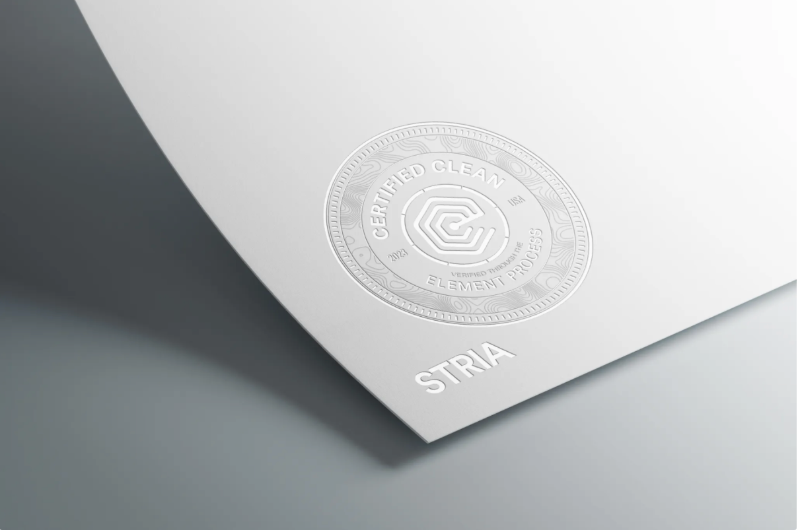
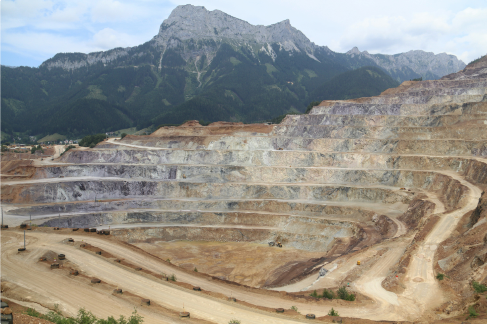
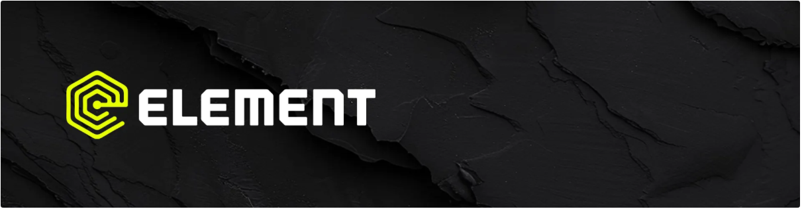

Element United x Dustin Minerals Partnership: Building the STRIA™ Network Across the Americas
Strategic partnership brings blockchain-based mining certification to 50+ operations in Central and South America
FOR IMMEDIATE RELEASE
Salt Lake City, Utah – November 2025
Element United today announced a strategic partnership with Dustin Minerals to onboard more than 50 mines across Central and South America to STRIA™—Element United's digital certification system for traceable, ethical mining.
STRIA (Standards for Traceable Resource Integrity & Advancement) provides real-time verification of mining practices, creating an unbroken digital record from extraction to market. Certified mines gain verified proof of ethical operations—meeting evolving global and cross-industry standards for sustainability, transparency, and responsible sourcing.
The partnership establishes a hemispheric network of verified mining operations, redefining how the Americas approach transparency, accountability, and interoperability in resource extraction.
"STRIA is not a stamp—it's a system," said Scott Lomu, President of Element United. "It's where verified sourcing meets verified accountability."
"Working with Element United brings enterprise-level verification to mining partners across Central and South America," said Dustin Minerals, Owner of Minerals & Extractives. "We're solving critical gaps in regional transparency while launching the infrastructure miners need to access global markets with verified credentials."
STRIA-certified mines access premium markets and command better prices. Visit ElementUnited.earth to certify your operation—or contact Element United about regional partnership opportunities.
STRIA™ serves mining operations, supply chain partners, and investors requiring verified ESG compliance and traceable sourcing.
About Minerals and Extractives, LLC
Minerals and Extractives, LLC provides digital infrastructure solutions for mining operations across Latin America, connecting traditional extraction with modern verification standards.
About Element United
Element United provides blockchain-based verification systems spanning natural resource management, mining operations, and asset preservation. Through platforms like Identify.earth, STRIA™, CORE™, and NextHeir, Element United creates transparent, verifiable records that bridge industries—from ethical extraction to family heirlooms, from mine to market to memory.
Every element tells a story. Element United built the system that maps them all—making trust infrastructure.
Media Contact
Element United
Press Relations
press@elementunited.com